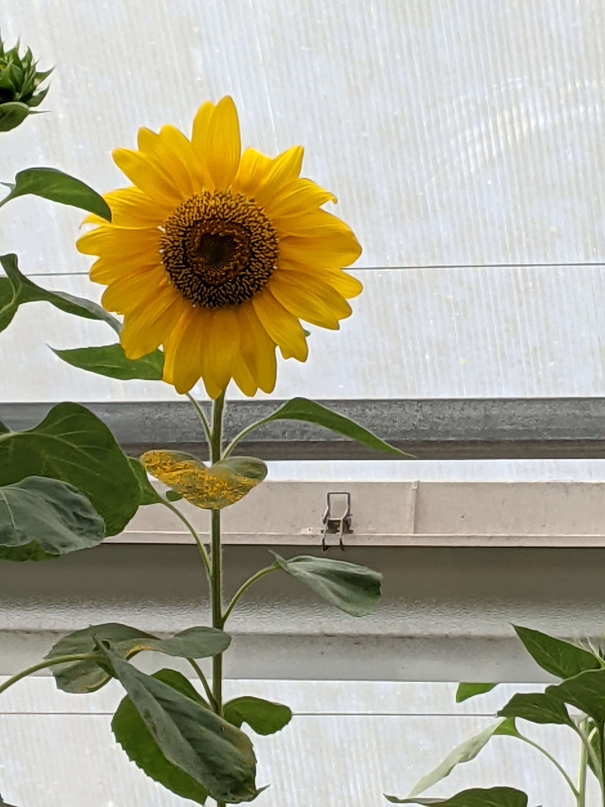
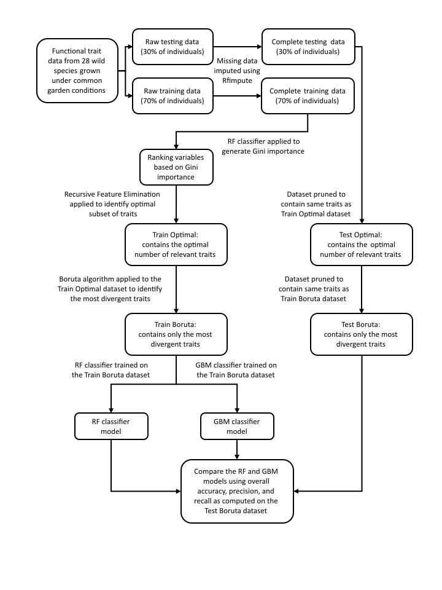
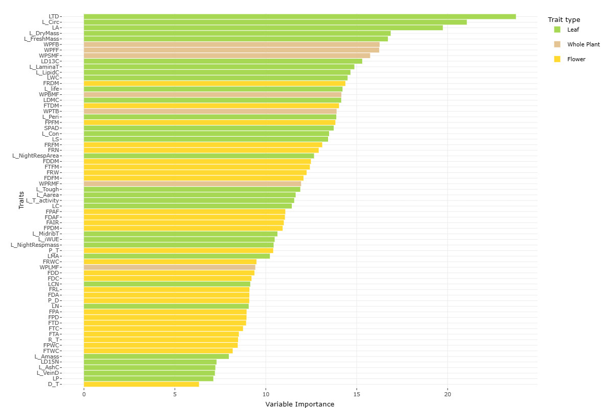
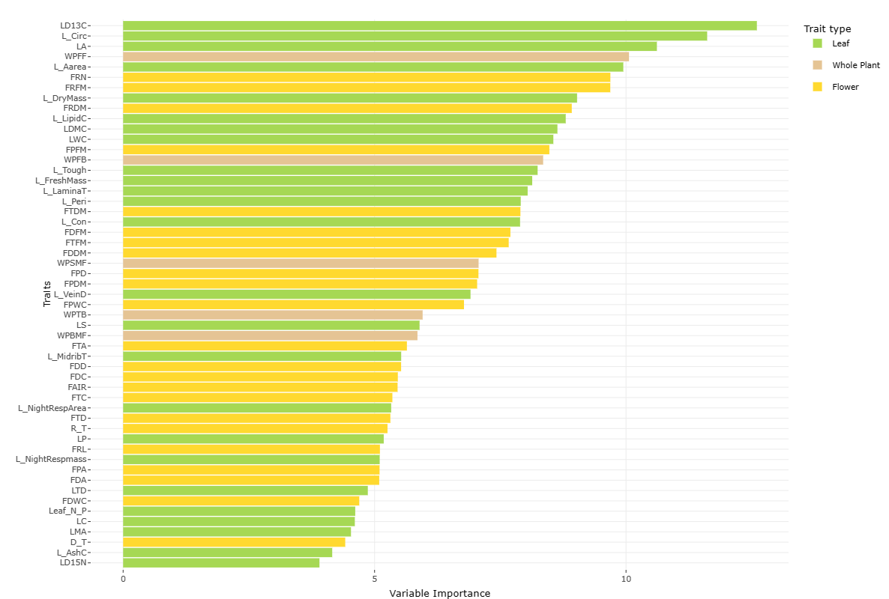

1. Introduction
- Background:
Plant diversification across multiple trait axes stands as a cornerstone of plant evolution. Functional traits, relating to a species’ fitness and life history strategies, are pivotal for understanding plant evolution and interactions with their environment. They provide a framework for comparing different plant species and exploring various ecological strategies employed to sustain populations. Objectively identifying these traits is essential to comprehend how plant species grow, survive, interact with the environment, and to model future vegetation dynamics worldwide.

2. Problem Statement
- The project is aimed at discerning the traits contributing significantly to interspecific phenotypic divergence in multivariate trait space, specifically within the genus Helianthus.
3. Data
- Study Area and Data Sources:
- The data was compiled from four distinct publications (Mason and Donovan 2015; Mason et al., 2016; Mason, Goolsby et al., 2017; Mason, Patel et al., 2017) into a single dataset. The relevant trait data was derived from a common garden experiment encompassing 28 diploid wild Helianthus species grown under high-resource greenhouse conditions. Each species was represented by 2-4 unique seed accessions, derived from populations across the species’ range, with approximately 5-8 individual plants per population. The dataset included a plethora of traits such as leaf morphological, ecophysiological, and defensive chemistry traits, whole-plant growth, biomass allocation, phenology traits, as well as floral morphological and ecophysiological traits, covering over 80% of all diploid nonhybrid species within the Helianthus genus.
- Data Preparation:
The dataset was split into a training set (70%) and a test set (30%) through random sampling. Missing values within the data were imputed using the Random Forest (RF) algorithm via the `rfImpute` function from the `randomForest` package.

Complete workflow of the entire analysis procedure
4. Feature selection and modeling methodology
- Employing descriptive and predictive machine learning approaches like Recursive Feature Elimination, the Boruta algorithm, Random Forest, and Gradient Boosting Machine classifiers, the study delved into trait data analysis at the genus level and within each of the three major evolutionary clades within the genus.
- The Mean Decrease of Gini Impurity within Random Forest was utilized to ascertain the relative importance of all traits to species divergence, ranking them accordingly. Finally, two classifiers, Random Forest and Gradient Boosting Machine, were trained on the training dataset and validated on the test dataset to corroborate the validity of the findings from Recursive Feature Elimination and Boruta.
6. Main Results
Divergent traits:
The study delineated species divergence along three strongly divergent trait axes at both the genus and respective clade levels.
A variance in functional trait importance was observed between the genus level and clade levels, indicating different axes of phenotypic divergence. Divergent traits at the genus level are shown below

Divergent traits at the perennial level are shown below

Model Performance:
- The study unveiled that machine learning models could accurately predict species identity from functional traits.
7. Conclusions
The methodology employed in this study unveils the potential for machine learning approaches in a plethora of contexts across basic and applied plant science, ranging from interspecific divergence to intraspecific variation across time, space, and environmental conditions. The impact of this study could significantly advance our understanding of plant functional traits and their relation to ecological strategies, especially in identifying crucial traits for crop breeding, conservation, and management.
8. Code
The code for this project can be accessible in the project GitHub repository
9. Application
9. Publication
This study also resulted in a scientific paper that is currently under peer-review. The paper can be read for free here
10. References
Mason, C. M., and L. A. Donovan. 2015. Evolution of the leaf economics spectrum in herbs: Evidence from environmental divergences in leaf physiology across Helianthus (Asteraceae). Evolution 69: 2705-2720
Mason, C. M., and L. A. Donovan. 2015. Evolution of the Leaf Economics Spectrum in Herbs: Evidence from Environmental Divergences in Leaf Physiology across Helianthus (Asteraceae). Evolution 69: 2705–20.
Mason, C. M., A.W.Bowsher, B.L.Crowell, R.M. Celoy, C-J Tsai, L.A.Donovan.2016. Macroevolution of Leaf Defenses and Secondary Metabolites across the Genus Helianthus.New Phytologist 209: 1720–33
Mason, C. M., E. W. Goolsby, K.E. Davies, D.V. Bullock, L.A. Donovan. 2017. Importance of Whole-Plant Biomass Allocation and Reproductive Timing to Habitat Differentiation across the North American Sunflowers. Annals of Botany 119: 1131–42.
Mason, C. M., H. S. Patel, K. E. Davis, and L. A. Donovan. 2017b. Beyond Pollinators: Evolution of Floral Architecture with Environment across the Wild Sunflowers (Helianthus, Asteraceae). Plant Ecology and Evolution 150: 139–50.
Westoby, M. 1998. A leaf-height-seed (LHS) plant ecology strategy scheme. Plant and Soil 199: 213–227.